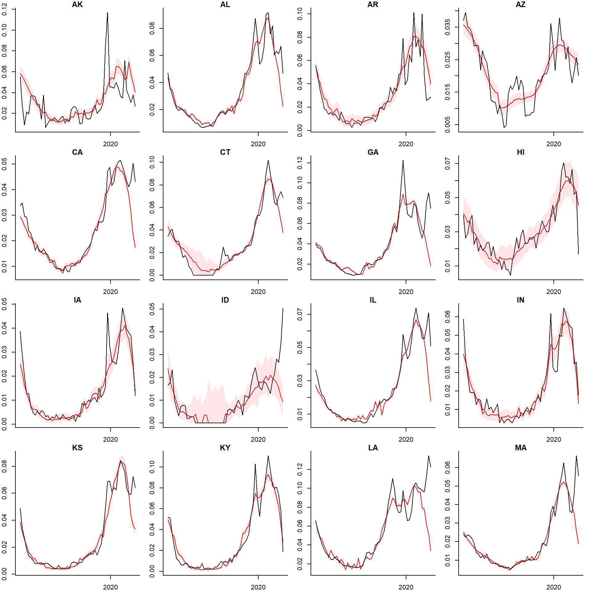
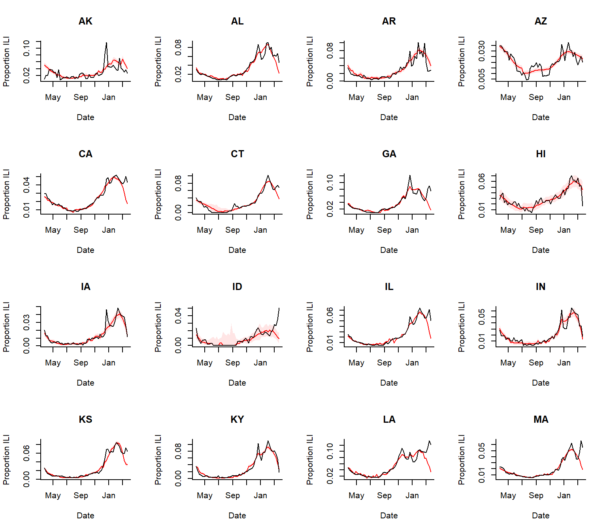
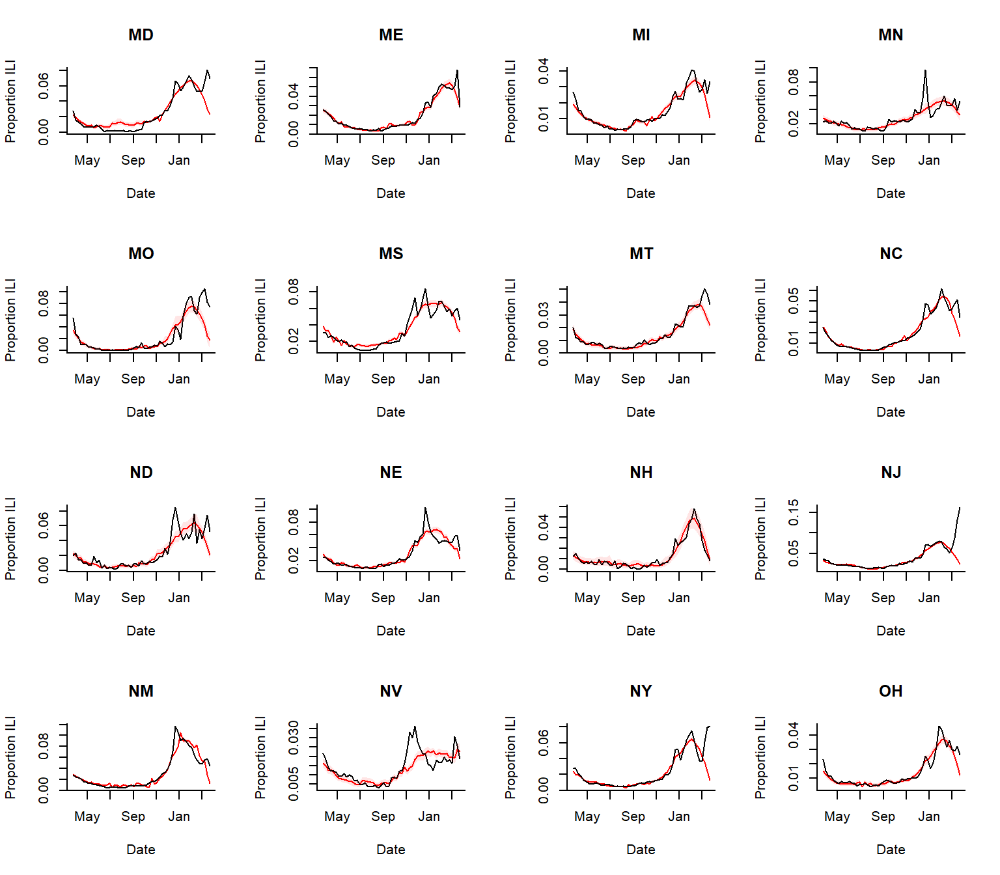
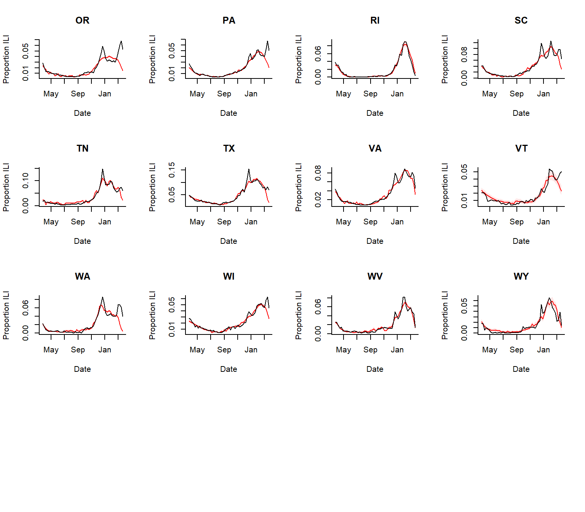

ILINet.rmdThe goal for this package is to facilitate the formatting of line list data from syndromic surveillance datasets into time series and then the analysis of these data to detect increases above the seasonal baseline. For US data, there is an option to automatically adjust the data for state-specific flu activity (using data from NREVSS and/or state-specific RSV activity (based on Google search volume). The user can either start with line list data or formatted time series data
In this example, we will analyze ILINet data with a simple seasonal baseline, adjusting for flu and year-to-year variations. The model is fit through end-of-February 2020 and then extrapolated forward based on the time of year and the amount of influenza activity. Influenza activity is captured by using the proportion of tests that were positive from the NREVSS system (log transformed in model)
ili.data$state <- state.abb[match(ili.data$region, state.name)] ili.data <- ili.data[, c("state", "week_start", "ilitotal", "total_patients")] ili.data <- ili.data[!is.na(ili.data$total_patients),] ili.data.spl <- split(ili.data, ili.data$state) min<-sapply(ili.data.spl, function(x) min(x$total_patients)) min #> AK AL AR AZ CA CO CT DE GA HI IA ID IL #> 43 2097 244 7949 14858 0 15 0 3151 665 149 34 24448 #> IN KS KY LA MA MD ME MI MN MO MS MT NC #> 1783 866 1034 1169 6273 472 2095 4301 842 680 5045 439 2177 #> ND NE NH NJ NM NV NY OH OK OR PA RI SC #> 106 595 1018 1286 958 2629 1638 5406 0 676 5436 1845 841 #> SD TN TX UT VA VT WA WI WV WY #> 0 3427 11851 0 15389 359 344 594 3141 1141 state.select<-names(min)[which(min>0) ] ili.data <- ili.data[ili.data$state %in% state.select,]
excess_cases1 <- excessCases(ds = ili.data, datevar = "week_start", statevar = "state", denom.var = "total_patients", adj.flu = "auto", use.syndromes = c("ilitotal"), extrapolation.date = "2020-03-01", time.res='week')
dates <- excess_cases1[[1]][[1]][[1]]$date unexplained.cases <- excessExtract(ds = excess_cases1, syndrome = "ilitotal", extract.quantity = "unexplained.cases") unexplained.log.rr <- excessExtract(ds = excess_cases1, syndrome = "ilitotal", extract.quantity = "resid1") denom <- excessExtract(ds = excess_cases1, syndrome = "ilitotal", extract.quantity = "denom") upi <- excessExtract(ds = excess_cases1, syndrome = "ilitotal", extract.quantity = "upi") lpi <- excessExtract(ds = excess_cases1, syndrome = "ilitotal", extract.quantity = "lpi") obs <- excessExtract(ds = excess_cases1, syndrome = "ilitotal", extract.quantity = "y") pred <- excessExtract(ds = excess_cases1, syndrome = "ilitotal", extract.quantity = "pred") result.object <- list('dates'=dates, 'obs'=obs[,,1], 'pred'=pred[,,1], 'unexplained.cases'=unexplained.cases[,,1], 'unexplained.log.rr'=unexplained.log.rr[,,1]) # saveRDS(result.object,'extracted.output.ilinet.rds')
rr <- sort(exp(unexplained.log.rr[232,,1]), decreasing=T) par(mfrow=c(1,1)) plot(y=1:length(rr),x=rr, yaxt='n', col='white') abline(v=1, lty=2) text(y=1:length(rr),x=rr, names(rr), yaxt='n', cex=0.5)

par(mfrow=c(4,4), mar=c(2,2,1,1)) dates <- result.object$dates states <- dimnames(pred)[[2]] for(i in 1:dim(pred)[2]){ plot(dates[180:233], pred[180:233,i,1]/denom[180:233,i,1], type='l', col='red', bty='l', main=states[i]) points(dates[180:233], obs[180:233,i,1]/denom[180:233,i,1], type='l', col='black') polygon(c(dates[180:233], rev(dates[180:233])), c(lpi[180:233,i,1]/denom[180:233,i,1], rev(upi[180:233,i,1]/denom[180:233,i,1])), col = rgb(1, 0, 0, alpha = 0.1), border = NA) }
